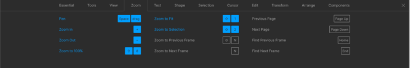
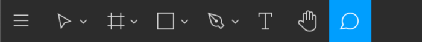

Онлайн-сервис Figma: все, что нужно знать разработчику
Figma- онлайн-приложение для разработки пользовательского интерфейса. Данный сервис стремительно набирает популярность во всем мире. В отличие от большинства дизайнерских приложений, Figma – бесплатный онлайн-сервис, который предоставляет доступ к проекту с любого устройства и тем самым значительно упрощает процесс разработки. Эта статья предназначена для разработчиков, которые имеют базовое представление о дизайне и хотят узнать обо всех аспектах работы в сервисе Figma.
Даже если вам еще не приходилось работать на платформе Figma, название этого сервиса вы наверняка уже слышали. Figma – относительно новое онлайн-приложение. Это означает, что вам не нужно устанавливать его на свой компьютер, и не нужно оплачивать дорогостоящую лицензию за предоставление общего доступа к файлам проекта.
Поскольку большинство разработчиков не имеет серьезного опыта работы с дизайнерскими приложениями, мы рассмотрим все аспекты Figma, которые нужно знать программисту для уверенного использования данного сервиса и получения всех необходимых данных об элементах пользовательского интерфейса, над которыми работает дизайнер. Я также затрону те опции Figma, которые предоставляют разработчику нужную информацию о CSS стилях, использованных в дизайне интерфейса.
Примечание о сочетаниях «горячих» клавиш
В большинстве случаев сочетания «горячих» клавиш будут указываться одновременно для операционных систем Windows и macOS. При этом клавиша Ctrl для Windows соответствует клавише Cmd в macOS, а клавиша Alt в Windows аналогична сочетанию клавиш Option/Alt в macOS. Например: Ctrl/Cmd + Alt + C соответствует Ctrl + Alt + C для Windows и Cmd + Alt/Option + C для macOS.
 Совместная работа над дизайном
Чтобы понять, почему появление сервиса Figma было встречено с таким энтузиазмом, и почему всем разработчикам внезапно понадобилось понимание дизайнерского процесса, обратимся к тем временам, когда этой платформы еще не существовало.
В те времена дизайнеры обычно общались с командой разработчиков с помощью электронной почты. Программисты получали десятки сообщений с массой вложений, среди которых были элементы дизайна, экспортированные ресурсы, или даже Word-документы со скриншотами страниц будущего сайта.
Разработчики, как правило, не имели доступа к полноценным исходникам – поскольку лицензии на дизайнерские приложения стоили очень дорого, а непосредственное участие программистов в процессе создания интерфейса не считалось необходимым. Обсуждение дизайна происходило разрозненно – по электронной почте, в системе управления проектом, в заметках к совещаниям. Всем участникам было сложно отслеживать прогресс в создании дизайна. При внесении любых изменений нужно было поставить в известность всех участников – и так по кругу.
По мере совершенствования дизайнерских приложений подобный рабочий процесс начал упрощаться. Дизайнеры начали использовать Zeplin и Invision для вовлечения разработчиков в обсуждение создаваемого интерфейса. Разработчики наконец-то получили полноценный доступ к дизайнерским материалам для извлечения данных об использованных цветах, шрифтах и параметрах элементов. Однако, несмотря на то, что доступ к актуальной версии дизайна стал открытым, дизайнерам по-прежнему приходилось работать в нескольких отдельных приложениях и прилагать усилия для синхронизации конечного результата. Такая схема работы была все еще далека от идеала.
Дизайнерский сервис Figma произвел очередную революцию в совместной работе над дизайном. Figma работает в браузере, не зависит от типа операционной системы, не требует установки. Кроме того, это облачная платформа – благодаря этому совместная работа и обсуждения теперь выглядят проще, чем когда-либо прежде, и всем участникам рабочего процесса доступна самая последняя версия создаваемого дизайна.
Начало работы в Figma
Когда вас добавляют в участники проекта, реализуемого с помощью сервисе Figma, у вас будет выбор – открыть приложение в браузере или скачать его десктопный вариант для операционной системы macOS или Windows. Десктопное приложение является кроссплатформенным (как мессенджер Slack или среда разработки Visual Studio Code).
Функциональность браузерной и десктопной версии приложения Figma примерно одинакова. Десктопное приложение, к примеру, имеет встроенную поддержку для установленных шрифтов, а браузерный вариант для использования таких шрифтов потребует установки плагина Figma Font Helper.
Интерфейс Figma разделен на три основные части. Посередине располагается обширный холст со всеми элементами дизайна. Слева находится панель доступа к слоям, ресурсам, страницам файла. Правая панель демонстрирует всю информацию об элементах дизайна.
Файл может состоять из нескольких страниц; каждая страница включает в себя один холст. Дизайнеры часто используют страницы для группировки элементов проекта по типам, например, выделяют отдельные страницы для системных уведомлений, иконок и так далее.
Когда вы впервые открываете новый проект в Figma, внимательно изучите все страницы файла. Если дизайнер сгруппировал цвета, шрифты и иконки на отдельных страницах – это сэкономит вам массу времени при разработке.
Разделы сервиса Figma
Прежде, чем мы перейдем к изучению функциональности платформы Figma, важно уделить время изучению интерфейса – это сделает вашу работу в Figma более эффективной.
- 1 Когда вы открываете файл, максимальный режим увеличения обеспечивает вывод всех разделов на видимую область экрана.
- 2 Увеличить или уменьшить масштаб рабочей области можно одновременным удерживанием Cmd ⌘ и прокручиванием вверх / вниз, либо с помощью нажатия клавиш + и -
- 3 Для горизонтальной прокрутки холста нужно одновременно нажимать на пробел и «протаскивать» холст мышью.
- 4 Быстро увеличить отдельную секцию или элемент можно путем выбора необходимого объекта и нажатия комбинации клавиш Shift— 2
- 5 Мгновенно вернуться в масштаб, при котором на холсте видны все элементы, можно с помощью комбинации клавиш Shift + 1